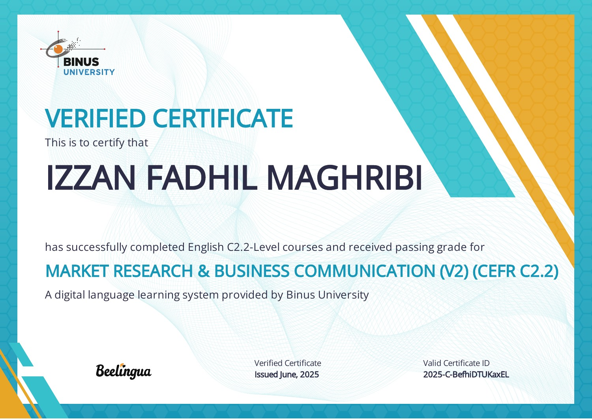
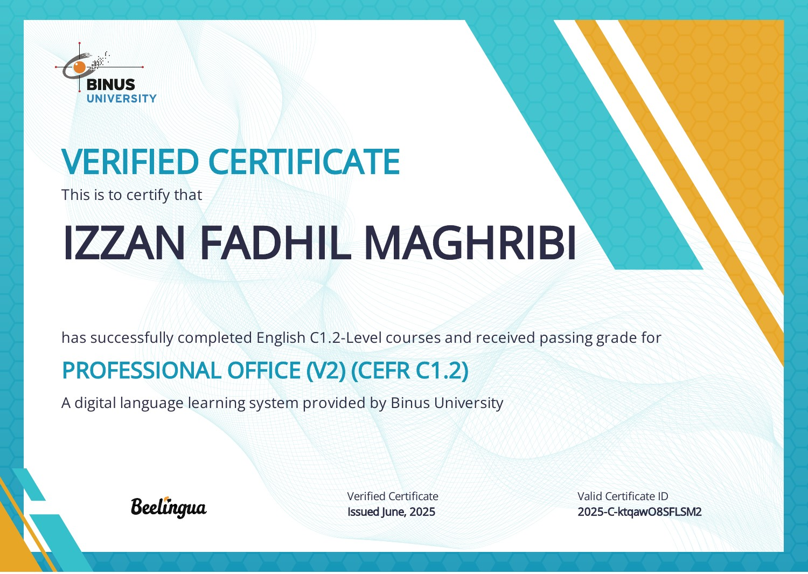
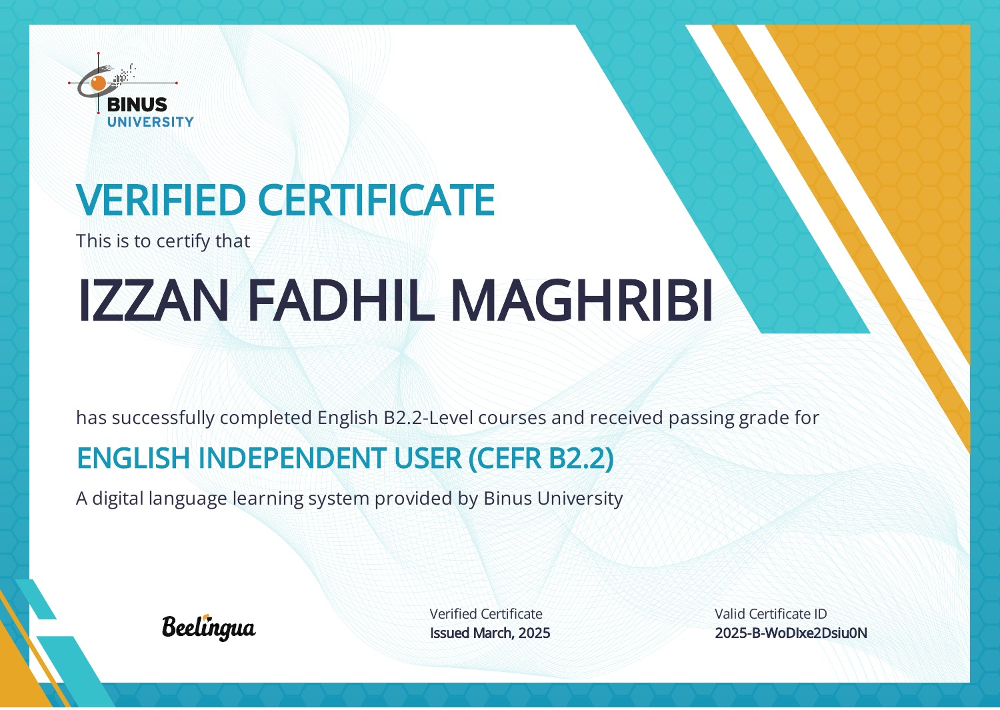
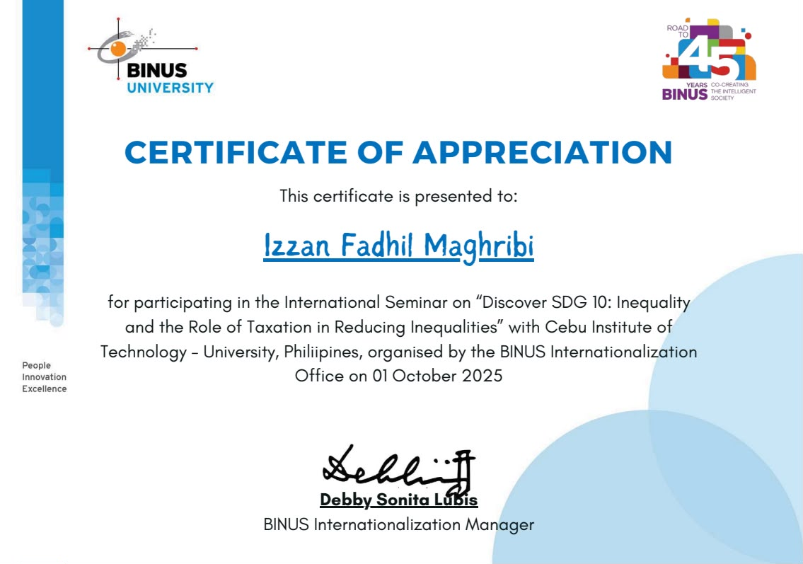
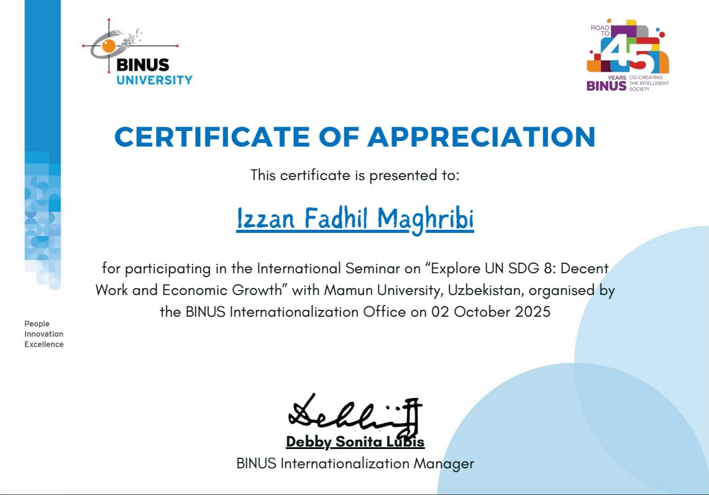
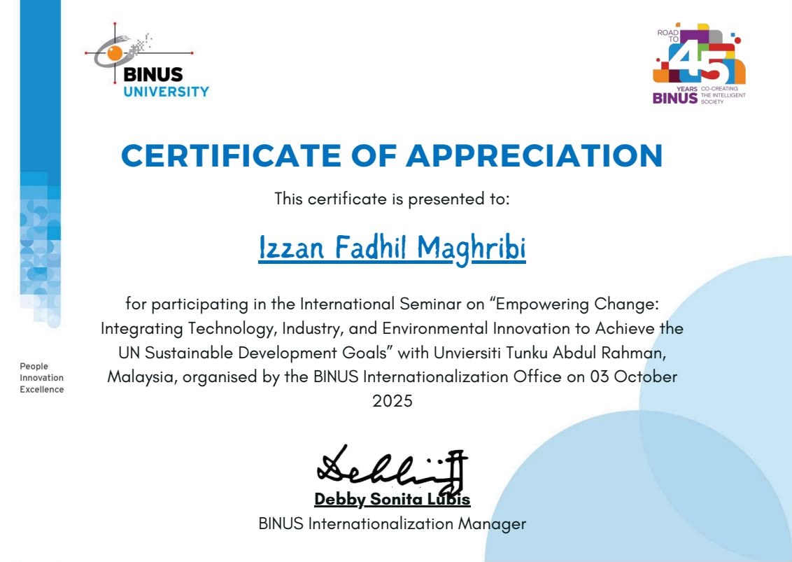
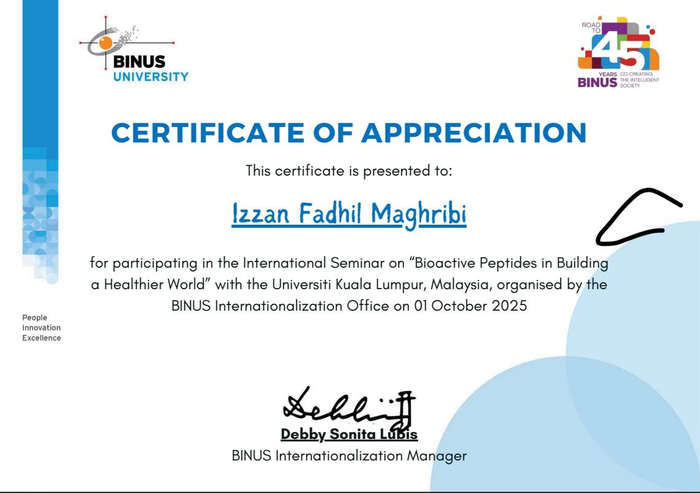
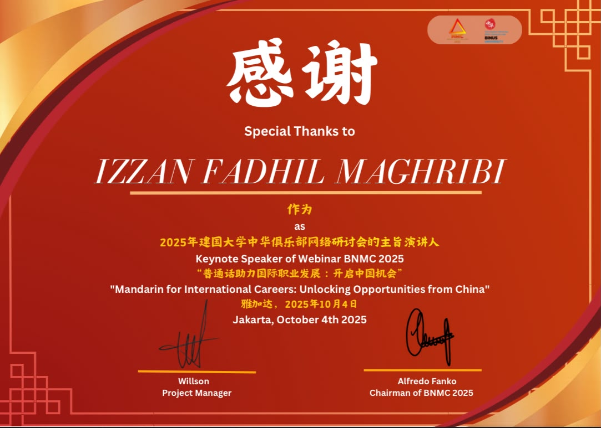
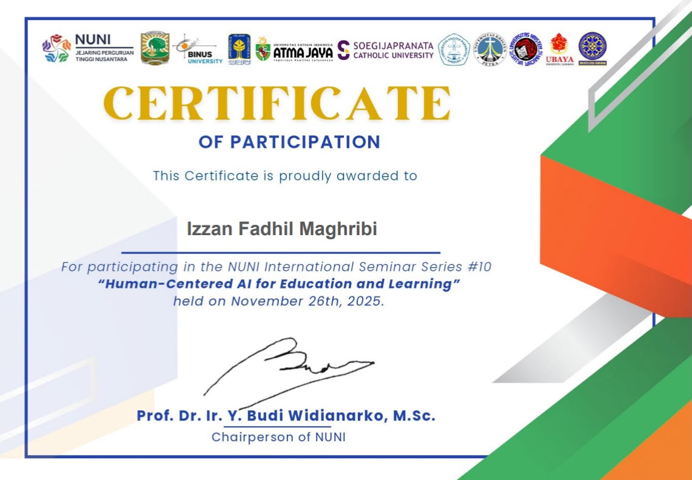
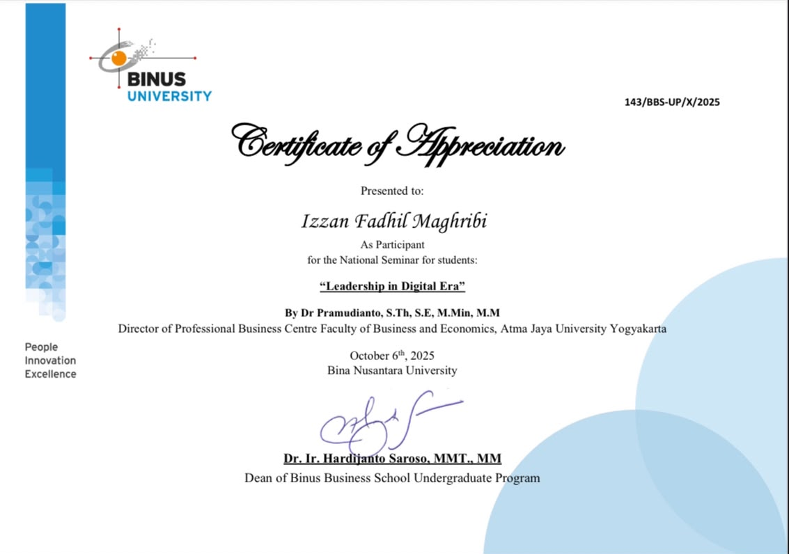

Certification
Learning &
recognition.
Certificates from language courses, international seminars, and speaking activities. Select any certificate to see it in full.
Language & communication courses

Market Research & Business Communication (V2)
Completed the Market Research & Business Communication (V2) course and received a passing grade at the CEFR C2.2 course level through BINUS University’s digital language-learning system.
View full certificate (new tab)Advanced English (V2)
Completed the Advanced English (V2) course and received a passing grade at the CEFR C2.1 course level through BINUS University’s digital language-learning system.
View full certificate (new tab)
Professional Office (V2)
Completed the Professional Office (V2) course and received a passing grade at the CEFR C1.2 course level through BINUS University’s digital language-learning system.
View full certificate (new tab)Creative Writing (V2)
Completed the Creative Writing (V2) course and received a passing grade at the CEFR C1.1 course level through BINUS University’s digital language-learning system.
View full certificate (new tab)
English Independent User
Completed the English Independent User course and received a passing grade at the CEFR B2.2 course level through BINUS University’s digital language-learning system.
View full certificate (new tab)Seminars & speaking

Discover SDG 10: Inequality and the Role of Taxation in Reducing Inequalities
Participation in a BINUS international seminar with Cebu Institute of Technology – University, Philippines, on taxation and reducing inequalities.
View full certificate (new tab)
Explore UN SDG 8: Decent Work and Economic Growth
Participation in a BINUS international seminar with Mamun University, Uzbekistan, exploring decent work and economic growth.
View full certificate (new tab)
Empowering Change: Technology, Industry & Environmental Innovation
Participation in a BINUS international seminar with Universiti Tunku Abdul Rahman, Malaysia, on integrating technology, industry, and environmental innovation to achieve the UN Sustainable Development Goals.
View full certificate (new tab)
Bioactive Peptides in Building a Healthier World
Participation in a BINUS international seminar with Universiti Kuala Lumpur, Malaysia, on bioactive peptides and their role in a healthier world.
View full certificate (new tab)
Mandarin for International Careers: Unlocking Opportunities from China
Recognition as a keynote speaker at the BNMC 2025 webinar in Jakarta on Mandarin and international career opportunities.
View full certificate (new tab)
Human-Centered AI for Education and Learning
Participation in NUNI International Seminar Series #10, exploring human-centered AI for education and learning.
View full certificate (new tab)
Leadership in Digital Era
Participation in a national student seminar on leadership in the digital era, presented by Dr. Pramudianto at Bina Nusantara University.
View full certificate (new tab)